01 · THE PHYSICIAN
The Physician
Rizal's original purpose was to continue his medical service in Cuba. His commitment to medicine remained part of his identity throughout his journey.
From his departure from Dapitan to his final days in Fort Santiago, José Rizal's last journey transformed an exile into one of the most enduring figures of Philippine history.
Rizal left Fort Santiago for Bagumbayan, accompanied by soldiers, Lieutenant Taviel de Andrade, and Jesuit priests. His execution became one of the defining moments in the history of Filipino nationalism.
Before leaving Dapitan, Rizal was already aware of the growing revolutionary movement in the Philippines. His final journey began with a decision to leave exile and serve as a physician in Cuba.
In June 1896, Pio Valenzuela visited Rizal in Dapitan as an emissary of the Katipunan. Valenzuela informed him about the organization's plans for an armed revolution and discussed the possibility of rescuing Rizal from exile.
Rizal opposed an immediate armed uprising. He believed that the movement was not yet sufficiently prepared in terms of resources, organization, and popular support.
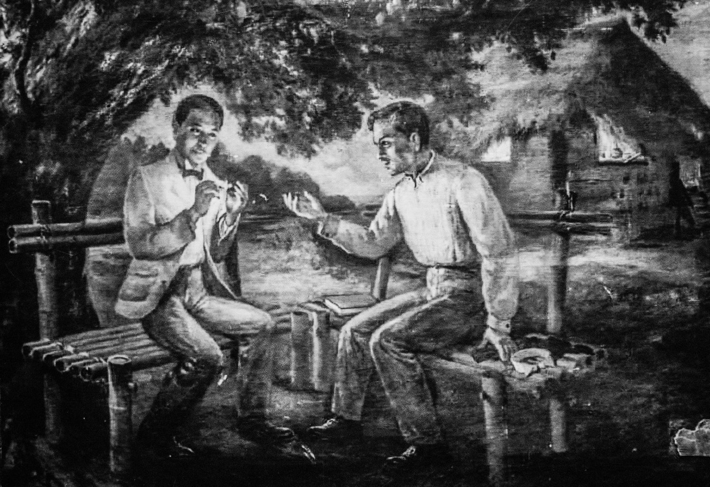
At midnight on July 31, 1896, Rizal left Dapitan aboard the steamer España. His departure was emotional after four years in exile, during which he had formed close relationships with the people of Dapitan.
The ship stopped at several ports before reaching Manila. It arrived in Dumaguete on August 1, where Rizal spent time with former acquaintances and friends before continuing toward Cebu, Iloilo, Capiz, and Romblon.
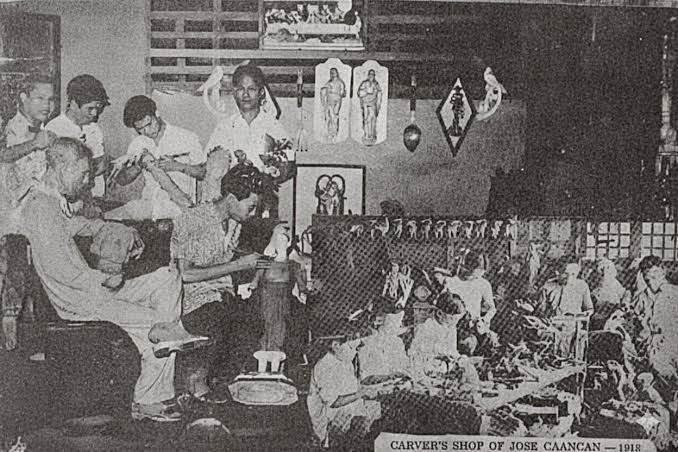
What began as a journey toward Cuba gradually became a political ordeal as the situation in the Philippines deteriorated and Rizal became associated with the revolutionary movement.
The España arrived at Manila Bay on August 6, 1896. Rizal intended to continue his journey to Spain before proceeding to Cuba, where he was expected to serve as a physician.
He missed the mail steamer Isla de Luzon, which had departed for Spain the previous day. Rizal was subsequently transferred to the Spanish cruiser Castilla as a guest while another ship was sought for his journey.
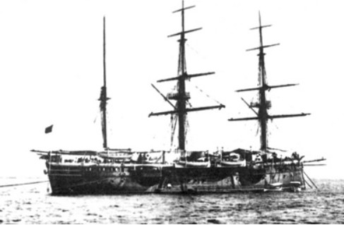
On September 3, 1896, Rizal left Manila aboard the Isla de Panay, bound for Barcelona. His intention remained to continue to Cuba and serve as a physician.
On September 7, the ship reached Singapore. Filipinos there warned Rizal about the worsening political situation and encouraged him to remain in the British colony, where they believed he would be safer.
Rizal nevertheless continued toward Spain, placing his confidence in the promises and protection of the Spanish government.
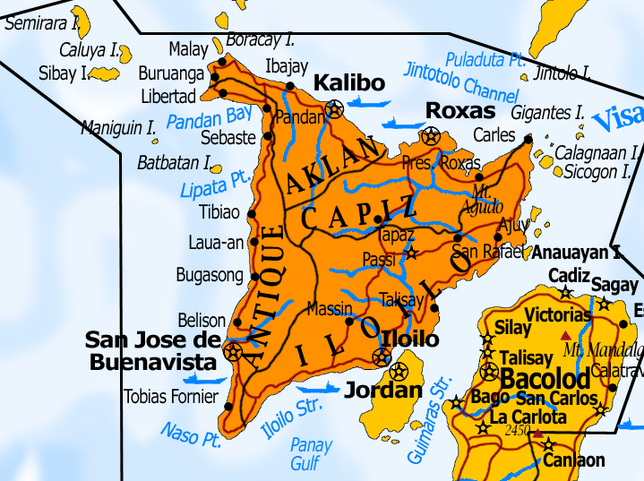
His journey was no longer simply a voyage toward Cuba. It had become a journey shaped by the political crisis surrounding the Philippine Revolution.
Rizal's Final Journey · 1896Rizal reached Barcelona on October 5, 1896, but instead of continuing to Cuba, he was ordered to return to the Philippines under military custody.
Rizal learned that he had been accused of being involved in the revolution. His intended medical service in Cuba was replaced by a forced return to the Philippines.
On October 6, he was taken to the Montjuïc prison-fortress in Barcelona. He was informed that he would be returned to Manila aboard the Colón.
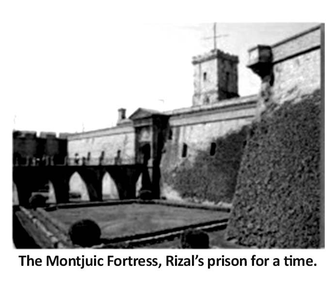
The Colón arrived in Manila on November 3, 1896. Rizal was taken to Fort Santiago, where he would spend the final weeks of his life.
His journey had begun in Dapitan with the intention of serving as a physician in Cuba. Instead, he returned to the Philippines as a political prisoner.
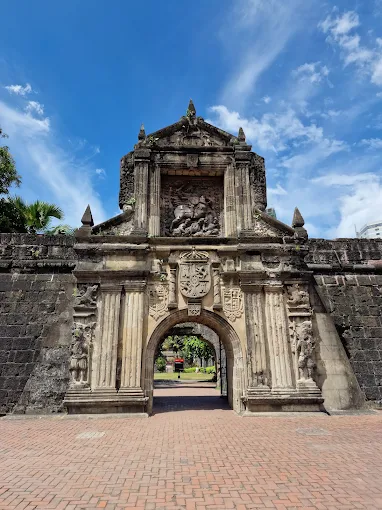
From November 3 to December 29, Rizal remained confined at Fort Santiago while facing accusations connected to the revolutionary movement.
Rizal was brought to Fort Santiago and confined there as the Spanish colonial government prepared its case against him.
The accusations ultimately centered on rebellion, sedition, and the formation or organization of illegal societies. Rizal denied responsibility for the armed uprising.
Rizal's court-martial was held at the Cuartel de España in Manila. He was defended by Lieutenant Taviel de Andrade, while Rizal also prepared a supplemental defense addressing the accusations against him.
At 6:00 a.m., Captain Rafael Dominguez read the death sentence to Rizal inside Fort Santiago. He was informed that his execution would take place the following morning at Bagumbayan.
Rizal's final hours were deeply personal. Alongside the political circumstances surrounding his death, he spent his remaining time writing, receiving visitors, and preparing messages for the people closest to him.
Rizal's mother, Teodora Alonso, and several of his sisters were able to visit him during his final hours. These meetings revealed the personal dimension of a final chapter often remembered primarily for its political meaning.
Rizal also wrote letters to members of his family and to his close friend Ferdinand Blumentritt. His final writings reflected his awareness of the approaching end of his life and his concern for those he would leave behind.
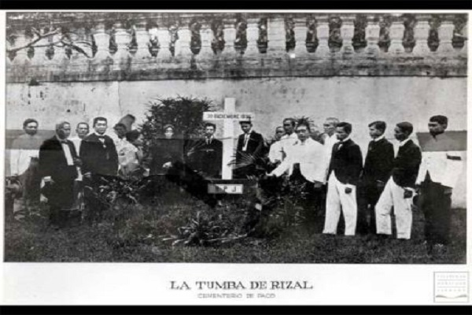
Among the most famous works associated with Rizal's final days is Mi Último Adiós, or My Last Farewell.
The manuscript was kept hidden and eventually given to his family. The poem became one of the most enduring expressions of Rizal's attachment to the Philippines, his willingness to sacrifice, and his hope for the country's future.
It is therefore better understood as a reflection of national identity, sacrifice, and love for the country rather than merely a personal farewell.
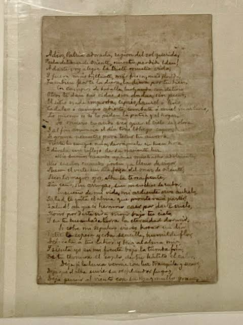
On December 30, 1896, Rizal left Fort Santiago for Bagumbayan. The final procession became one of the most remembered moments in Philippine history.
At approximately 6:30 a.m., Rizal began the final walk from Fort Santiago toward Bagumbayan. He was accompanied by soldiers, Lieutenant Taviel de Andrade, and Jesuit priests.
The journey is best understood as a historical procession rather than simply a march to his execution. People gathered along the route and around the execution ground, while contemporary accounts describe Rizal as calm and composed.
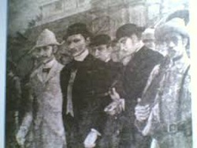
December 30, 1896 became more than the date of Rizal's death. It became a defining moment in the history of Filipino nationalism.
Bagumbayan · December 30, 1896Following his death, the colonial authorities attempted to keep Rizal's burial place concealed. Instead, the secrecy surrounding his remains contributed to the growth of his symbolic importance.
Rizal's body was secretly buried at Paco Cemetery in Manila. The authorities initially concealed the location and did not publicly identify the grave.
His sister Narcisa eventually located the burial place and arranged for a marker bearing the initials R.P.J.
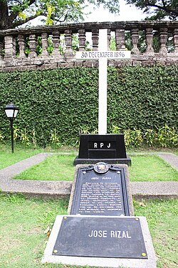
Rizal's remains were exhumed in 1898 and were later transferred to the monument at Luneta.
The attempt to conceal his burial place could not prevent his death from becoming a powerful symbol. Instead, Rizal's execution strengthened his status as a martyr and contributed to the emotional and nationalist force surrounding the Philippine Revolution.
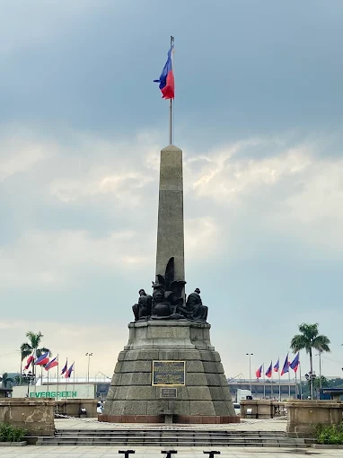
Rizal's final journey illustrates the dramatic transformation of his position between July and December 1896. He left Dapitan as an exiled physician and returned to the Philippines as a political prisoner.
Rizal's original purpose was to continue his medical service in Cuba. His commitment to medicine remained part of his identity throughout his journey.
Political circumstances transformed his intended journey into imprisonment, trial, and eventual execution in Manila.
His death gave new symbolic force to his writings and ideas and helped establish Rizal as one of the central figures of Filipino nationalism.
The following sources were consulted for the historical information presented on this page.